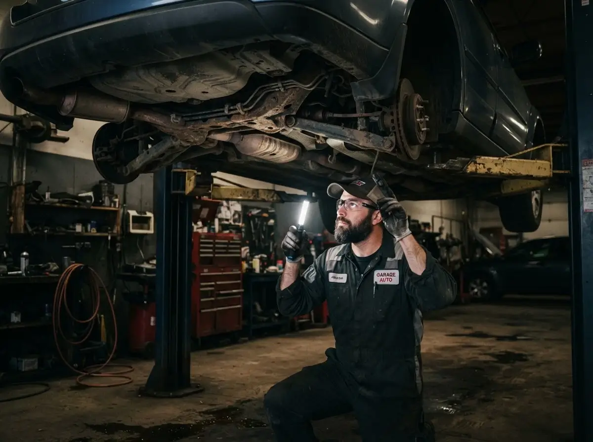
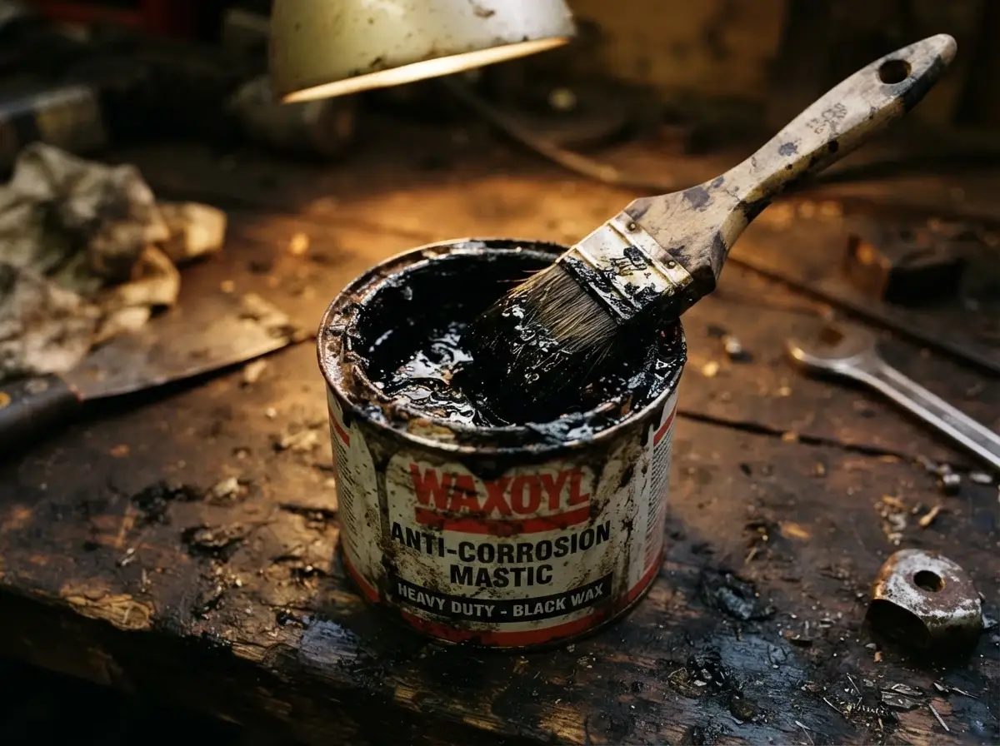

Всё об антикоррозийной обработке автомобиля
Разбираем реагенты, мастику и воск, периодичность обработки и другие вопросы, которые чаще всего задают наши клиенты — простым языком, без лишнего технического жаргона.
Читайте и берегите кузов
-

Профилактика28 декабря 2025 · 5 мин чтенияКак часто нужно делать антикор
Раз в год, раз в два года или только один раз при покупке? Рассказываем, от чего реально зависит периодичность обработки.
Читать статью → -

Материалы15 декабря 2025 · 6 мин чтенияМастика или воск — что выбрать
Два принципиально разных состава для разных задач. Объясняем разницу простыми словами и говорим, где что применять.
Читать статью → -
Новый автомобиль
5 декабря 2025 · 5 мин чтения
Нужен ли антикор новому авто из салона
У дилерского автомобиля уже «есть» заводская защита. Разбираемся, хватает ли её на самом деле и когда стоит её усилить.
Читать статью → -
Сезон
12 января 2026 · 6 мин чтения
Чем опасны зимние реагенты для кузова
Как соль и химия запускают коррозию и какие зоны кузова страдают первыми в зимний сезон.
Читать статью →
Расскажем об обработке именно вашего авто
Оставьте контакты — подскажем оптимальный состав, сроки и точную стоимость по вашей машине.